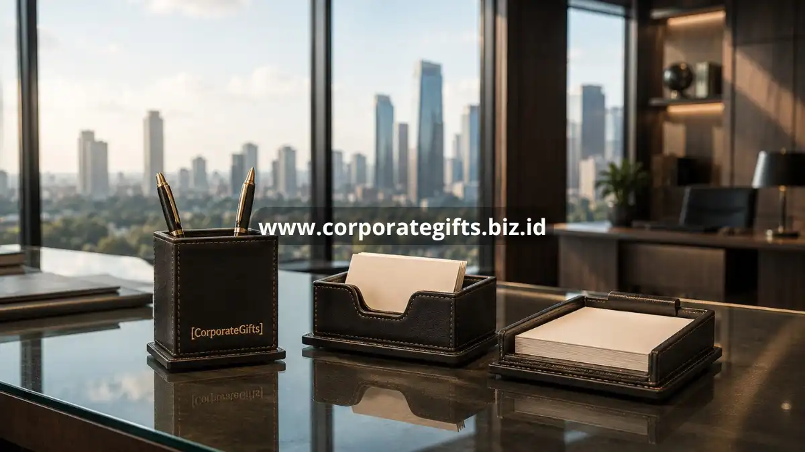

Poin Penting:
- Akhir tahun merupakan momen paling umum untuk pengiriman hampers korporat.
- Penandatanganan kontrak baru menjadi simbol awal hubungan bisnis yang positif.
- Onboarding karyawan baru dapat diperkuat dengan welcome gift yang berkesan.
- Momen internal seperti seminar atau gathering juga cocok untuk pemberian souvenir.
- CorporateGifts membantu menyesuaikan jenis hadiah dengan momen bisnis Anda.
Banyak perusahaan hanya memberikan hadiah korporat pada momen akhir tahun, padahal terdapat berbagai titik kontak lain sepanjang tahun yang justru dapat memberikan dampak lebih besar jika dimanfaatkan dengan tepat. Memahami kalender momen strategis ini membantu perusahaan merencanakan program corporate gifting yang lebih terstruktur dan berkesinambungan.
Artikel ini mengulas berbagai momen strategis yang layak dijadikan agenda pemberian hadiah korporat sepanjang tahun.
Mengapa Akhir Tahun Menjadi Momen Utama Pemberian Corporate Gift?
Akhir tahun menjadi momen utama pemberian corporate gift karena bertepatan dengan tradisi perayaan sekaligus evaluasi kerja sama sepanjang tahun. Momen ini dianggap paling tepat untuk mengucapkan terima kasih atas hubungan bisnis yang telah terjalin.
Pada periode ini, banyak perusahaan mengirimkan hampers berisi kombinasi makanan, minuman, dan aksesori kerja kepada klien dan mitra sebagai simbol apresiasi tahunan. Selain sebagai ucapan terima kasih, momen ini juga menjadi kesempatan untuk membuka jalan kerja sama di tahun berikutnya dengan kesan positif yang segar.
Perencanaan yang matang sangat penting pada momen ini karena volume permintaan hampers korporat cenderung meningkat tajam menjelang akhir tahun, sehingga pemesanan lebih awal membantu memastikan kualitas produksi dan ketepatan waktu pengiriman.
Bagaimana Momen Penandatanganan Kontrak Menjadi Kesempatan Emas?
Momen penandatanganan kontrak baru menjadi kesempatan emas untuk memberikan corporate gift karena menandai awal hubungan bisnis yang formal. Hadiah pada momen ini berfungsi sebagai simbol komitmen dan itikad baik dari perusahaan.
Pemberian hadiah pada saat ini biasanya berupa barang dengan kesan elegan dan formal, seperti set alat tulis premium atau plakat penghargaan kerja sama, yang mencerminkan keseriusan perusahaan dalam menjalin hubungan bisnis jangka panjang.
Kesan pertama yang baik pada momen ini cenderung membekas lebih dalam dibandingkan pemberian hadiah pada momen-momen berikutnya, karena hadiah tersebut menjadi bagian dari pengalaman awal klien atau mitra terhadap perusahaan Anda.
Kapan Onboarding Karyawan Baru Layak Disertai Welcome Gift?
Onboarding karyawan baru layak disertai welcome gift sejak hari pertama bekerja, karena momen ini membentuk kesan awal karyawan terhadap budaya dan nilai perusahaan. Welcome gift yang berkesan dapat mempercepat rasa memiliki karyawan terhadap perusahaan.
Welcome gift biasanya berisi kombinasi barang fungsional seperti notebook, tumbler, atau tas kerja yang dilengkapi dengan sentuhan personal, seperti nama karyawan atau ucapan selamat bergabung, sehingga terasa lebih hangat dibandingkan sekadar seragam kerja standar.
Momen ini juga menjadi kesempatan bagi perusahaan untuk memperkenalkan identitas merek sejak awal kepada karyawan baru, sehingga tumbuh rasa bangga dan keterikatan terhadap perusahaan sejak hari pertama bekerja.

Mengapa Acara Seminar dan Gathering Korporat Membutuhkan Souvenir Khusus?
Acara seminar dan gathering korporat membutuhkan souvenir khusus karena momen ini melibatkan interaksi langsung dengan banyak peserta sekaligus, sehingga menjadi peluang besar untuk memperluas eksposur merek perusahaan secara efisien.
Souvenir untuk acara semacam ini biasanya dirancang dalam jumlah besar dengan desain yang konsisten, seperti goodie bag berisi alat tulis, tumbler, atau merchandise ringan lainnya yang dibagikan kepada seluruh peserta acara.
Selain menjadi kenang-kenangan, souvenir acara juga berfungsi sebagai pengingat berkelanjutan bagi peserta terhadap perusahaan penyelenggara, terutama jika desain dan kualitas barang yang diberikan meninggalkan kesan positif selama acara berlangsung.
Bagaimana Menyusun Kalender Pemberian Corporate Gift Sepanjang Tahun?
Menyusun kalender pemberian corporate gift sepanjang tahun dapat dilakukan dengan memetakan momen-momen penting perusahaan, klien, dan karyawan, kemudian menyesuaikan jenis hadiah dengan konteks masing-masing momen tersebut.
Kalender ini sebaiknya mencakup momen tahunan tetap seperti akhir tahun dan ulang tahun perusahaan, serta momen dinamis seperti penandatanganan kontrak baru, onboarding karyawan, dan acara internal yang jadwalnya dapat berubah setiap tahun.
Dengan kalender yang terstruktur, perusahaan dapat merencanakan anggaran dan proses produksi hadiah korporat jauh-jauh hari, sehingga menghindari risiko keterlambatan yang dapat mengurangi dampak positif dari hadiah yang diberikan.
Bagaimana Merayakan Pencapaian Target Bersama Klien dengan Corporate Gift?
Merayakan pencapaian target bersama klien dengan corporate gift dapat dilakukan saat proyek kerja sama berhasil diselesaikan atau ketika target bisnis bersama tercapai. Momen ini menegaskan bahwa keberhasilan tersebut merupakan hasil kolaborasi, bukan pencapaian sepihak.
Hadiah pada momen ini biasanya dipilih dengan nuansa perayaan, seperti hampers berisi kudapan premium atau plakat apresiasi kerja sama, yang mencerminkan rasa syukur atas pencapaian yang telah diraih bersama.
Momen perayaan pencapaian target juga menjadi kesempatan strategis untuk memperkuat komitmen kerja sama ke tahap berikutnya, karena klien merasa kontribusinya diakui secara nyata oleh perusahaan mitra.
Bagaimana Momen Ulang Tahun Perusahaan Bisa Dimanfaatkan untuk Corporate Gift?
Momen ulang tahun perusahaan dapat dimanfaatkan untuk corporate gift dengan mengirimkan hadiah apresiasi kepada klien, mitra, dan karyawan sebagai bentuk syukur atas perjalanan bisnis yang telah dilalui bersama. Momen ini memberikan nuansa personal karena berkaitan langsung dengan identitas dan sejarah perusahaan.
Hadiah pada momen ulang tahun perusahaan sering kali dirancang dengan tema khusus yang mencerminkan perjalanan atau pencapaian perusahaan selama periode tertentu, sehingga terasa lebih bermakna dibandingkan hadiah generik pada umumnya.
Selain untuk pihak eksternal, momen ini juga tepat digunakan untuk mengapresiasi karyawan internal yang telah berkontribusi terhadap pertumbuhan perusahaan, sehingga menumbuhkan rasa bangga dan keterikatan yang lebih kuat terhadap tempat mereka bekerja.
Rencanakan momen pemberian corporate gift perusahaan Anda bersama CorporateGifts. Kami menyediakan hampers akhir tahun, welcome gift karyawan, hingga souvenir acara korporat yang siap disesuaikan dengan kebutuhan dan jadwal bisnis Anda. Hubungi CorporateGifts sekarang untuk konsultasi dan pemesanan.
FAQ
1. Mengapa akhir tahun menjadi momen utama pemberian corporate gift?
Akhir tahun merupakan tradisi perayaan dan evaluasi kerja sama, serta momen yang tepat untuk berterima kasih sekaligus membuka jalan kerja sama di tahun berikutnya.
2. Mengapa pemberian corporate gift saat penandatanganan kontrak baru sangat penting?
Momen ini menjadi kesempatan emas untuk membangun kesan pertama yang kuat dan menjadi simbol komitmen serta itikad baik dari perusahaan.
3. Apa fungsi welcome gift saat onboarding karyawan baru?
Welcome gift membantu membentuk kesan awal yang positif, memperkenalkan nilai perusahaan, dan mempercepat timbulnya rasa memiliki serta keterikatan karyawan sejak hari pertama.
4. Apa manfaat memberikan souvenir khusus di acara seminar atau gathering korporat?
Pemberian souvenir memperluas eksposur merek secara efisien ke banyak peserta sekaligus dan menjadi pengingat berkelanjutan tentang perusahaan penyelenggara.
5. Bagaimana cara menyusun kalender pemberian corporate gift yang efektif?
Petakan momen penting tahunan tetap seperti ulang tahun perusahaan dan akhir tahun, serta momen dinamis seperti penandatanganan kontrak dan onboarding karyawan untuk mempermudah perencanaan anggaran dan produksi.
Butuh rekomendasi cepat untuk corporate gift?
Chat tim Pusat Souvenir & Merchandise Kantor untuk kurasi pilihan sesuai budget & kebutuhan brand Anda.